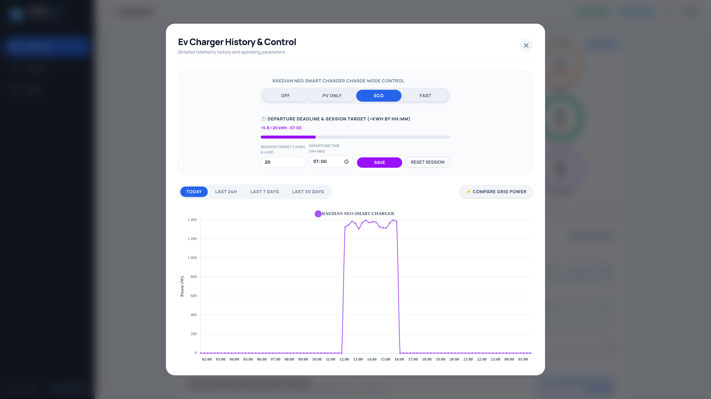

Gebruikershandleiding & Dashboardbediening
Ontdek het dagelijkse gebruik van GEMS: navigeren door het geanimeerde PowerFlow-overzicht, historische detailgrafieken openen met één klik, EV-laadpalen aansturen via Modbus TCP of Native OCPP en overzichtelijke PDF-energierapporten exporteren.
Liever een overzichtelijk naslagwerk op papier of tablet? Download de volledige GEMS Gebruikers- & Instellingenhandleiding (PDF) met PowerFlow-schema's in hoge resolutie, grafiekuitleg en alle EV-laadmodi.
1. Dashboard & Interactief PowerFlow-diagram
Het Dashboard vormt het centrale hart van GEMS en toont uw realtime energiestromen met geanimeerde stroomlijnen waarvan snelheid en richting het actuele vermogen weerspiegelen.


Dynamische zichtbaarheid van knooppunten & Stale/Offline-bewaking
Volgens onze ontwerpfilosofie worden energieknooppunten (Net, Zonne-omvormers, Thuisbatterij, EV-laadpalen, Warmtepomp en Slimme Relais) uitsluitend getoond wanneer ze daadwerkelijk geconfigureerd en actief verbonden zijn. Beschikt uw installatie (nog) niet over een thuisbatterij of laadpaal, dan blijven die kaarten automatisch verborgen voor een rustig en overzichtelijk scherm. Zodra live telemetrie veroudert of een toestel offline gaat, toont GEMS een duidelijke waarschuwingsbanner, sluit offline toestellen uit van totale vermogens en handhaaft veilige EV-terugvalstromen op 1×230V, 3×230V Delta en 3×400V+N. Klikken op het batterijknooppunt toont bovendien de 24-uurs piekbewuste batterijprognose (inclusief solar_hold-ochtendruimte), terwijl EV-laadpalen (zoals Raedian) optionele vertrekdoelen (+kWh tegen UU:MM, zonder voertuig-API's) ondersteunen.
2. Doorklikbare Historische Grafieken & Netvergelijking
Door rechtstreeks op een knooppunt in het PowerFlow-diagram te klikken (bijv. op Zon of Batterij) opent u onmiddellijk het detailvenster met Historische Tijdreeksgrafieken.



Klik in elk historisch grafiekvenster op de knop ⚡ Vergelijk met Netstroom om uw realtime netafname en -injectie over de grafiek van uw zonnepanelen of thuisbatterij heen te leggen. Zo ziet u in één oogopslag hoe verbruikspieken in huis werden opgevangen door uw batterij of het net.
Keuze van Tijdsperiode & Resolutie
- Laatste 1 uur (1m resolutie): Fijnmazig detail om korte verbruikspieken en inschakelstromen van huishoudtoestellen te analyseren.
- Laatste 24 uur (5m resolutie): Volledige dagcurve van zonneproductie, batterijcycli (SoC) en laadsessies.
- Laatste 7 dagen (15m resolutie): Wekelijkse zelfverbruikstrends en verdeling van de Vlaamse kwartierpieken.
- Laatste 30 dagen (1u resolutie): Maandelijkse energiebalans en totale afname-/injectievolumes.
3. Vlaamse Kwartierpiek-monitor
Meteen onder het PowerFlow-hoofddiagram volgt de Vlaamse Capaciteitsmonitor realtime het gemiddelde kwartiervermogen van uw digitale meter.
| Statuslabel | Voorwaarde | Actie van GEMS |
|---|---|---|
| NORMAAL | Verwachte kwartierpiek < 80% van capacity_peak_limit_kw |
Normaal bedrijf. Alle laadpalen en batterijen draaien volgens hun ingestelde programma. |
| WAARSCHUWING | Verwachte kwartierpiek tussen 80% en 99% van het piekplafond | Preventieve bewaking. Verdere verhoging van laadstromen wordt gepauzeerd om overschrijding te vermijden. |
| BEGRENSD | Verwachte kwartierpiek ≥ 100% van het piekplafond | Actieve piekbewaking ingeschakeld! EV-laadpalen worden stapsgewijs verlaagd (16A → 10A → 6A → 0A) en de thuisbatterij springt bij om de verbruikspiek af te vlakken. |
4. Toestelbeheer & Configuratiewizard
Om nieuwe energietoestellen toe te voegen of bestaande verbindingen aan te passen, gaat u naar Instellingen → Toestellen.
- Klik rechtsboven op Nieuw energietoestel toevoegen.
- Kies uw hardwaretemplate uit de catalogus van 180 voorgeconfigureerde fabrikantprofielen (bijv. Solis Hybrid Inverter, RAEDIAN Wallbox, Fluvius P1 Slimme Meter of Shelly Pro 3EM).
- Vul het IP-adres of de seriële poort in, controleer het poortnummer (standaard
502voor Modbus TCP) en het Modbus Slave ID. (Opmerking: bij OCPP-laadpalen vult u enkel uw ChargePoint ID in). - Klik op Verbinding testen om de bereikbaarheid direct te verifiëren.
- Klik op Opslaan. De Go-backend start onmiddellijk met het uitlezen van de live meetwaarden.
5. Lokale Netwerk- & Seriële Poortscanner
Nieuw aangesloten RS-485-/P1-adapters of netwerk-IP-adressen van zonne-omvormers en laadpalen vindt u in enkele seconden met de ingebouwde Hardwarescanner.

- Seriële Poort & RS-485 Detectie: Klik op Seriële poorten scannen om automatisch DSMR / e-MUCS P1-slimme meters en RS-485 Modbus RTU-energietoestellen te herkennen (zoals Solis hybride omvormers, RAEDIAN laadpalen en DIN-rail energiemeters), inclusief vaste
/dev/serial/by-id/*-paden, baudrate, pariteit en Modbus Slave ID. Klik op + Configureren om het toevoegformulier direct in te vullen, of start een Geavanceerde RS-485 busscan over aangepaste Slave ID-bereiken. - Lokale Subnet LAN-scan: Klik op Subnet scannen om actieve Ethernet- en Wi-Fi-energietoestellen op uw lokale netwerk (bijv.
192.168.1.0/24) te vinden met fabrikantherkenning (MAC OUI) en open poortlabels (502,80/443,8887).
6. Modbus TCP Bereikbaarheidstest (`Test Connection`)
Vóórdat u een toestel definitief opslaat in SQLite, kunt u met één klik een diagnostische verbindingstest uitvoeren:
- Stuurt een directe TCP-handshake naar het opgegeven IP-adres en poortnummer.
- Meet de exacte antwoordtijd (latentie) in milliseconden ($ms$).
- Leest ter controle het algemene Modbus-/SunSpec-identificatieregister (register
40001/0x9C41) uit om te bevestigen dat het opgegeven Slave ID reageert.
7. Slim EV-laden: Modbus TCP (Aanbevolen) & Native OCPP-server
GEMS stuurt uw laadpaal realtime aan om zonne-overschot maximaal te benutten en Vlaamse kwartierpieken te vermijden. Laadpalen kunnen gekoppeld worden via Modbus TCP (aanbevolen voorkeur) of via de ingebouwde Native OCPP-server.
Modbus TCP geniet de voorkeur voor lokale laadpaalsturing:
- Directe sub-seconde terugregeling: Via Modbus-registers leest GEMS fasestromen uit en schrijft stroomlimieten (6A tot 32A) onmiddellijk weg zonder WebSocket-vertraging — cruciaal om kwartierpieken en zekeringsoverbelasting direct op te vangen.
- Behoud van werkgeversverrekening (Split-Billing) & externe CPO: Is uw laadpaal via OCPP verbonden met een extern CPO-verrekenplatform of werkgeversvergoedingsdienst? Dan hoeft u die verbinding niet te verbreken. GEMS regelt het laadvermogen lokaal via Modbus TCP terwijl de automatische kostenverrekening via OCPP ongestoord doorloopt.
- Ondersteunde laadpalen: RAEDIAN Gemini/NEO/NEX, Alfen Eve, KEBA KeContact P30/P40, Mennekes AMTRON, Webasto Live/Next, ABB Terra AC, Phoenix Contact CHARX, Veton, SolarEdge Home EVSE en generieke Modbus TCP-laadpalen.
Zo koppelt u: activeer Modbus TCP in de installateursapp van uw laadpaal (poort 502) en voeg het toestel toe in GEMS onder Instellingen → Toestellen → Laadpaal met het IP-adres en Modbus Slave ID (meestal 1).
Voor laadpalen zonder Modbus TCP of particuliere installaties zonder extern CPO-verrekenplatform draait GEMS een ingebouwde OCPP 1.6-J WebSocket-server op poort 8887 (ws://<ip>:8887/<ID>) en poort 8080 (ws://<ip>:8080/api/ocpp/<ID>). De laadpaal verbindt rechtstreeks via het lokale netwerk met de Raspberry Pi zonder enige cloudafhankelijkheid.
Uw laadpaal verbinden via Native OCPP
- Open de installateursapp van uw laadpaal (bijv. RAEDIAN Install, Easee Installer, Alfen ACE Service Installer of Wallbox App).
- Ga naar Connectiviteit → OCPP / CSMS-instellingen.
- Stel de Server-URL / het WebSocket-eindpunt in op:
OCPP-eindpunt
ws://<raspberry-pi-ip>:8887/<Uw-Laadpaal-ID> # Of via reverse-proxy poort 8080: ws://<raspberry-pi-ip>:8080/api/ocpp/<Uw-Laadpaal-ID> # Voorbeeld voor laadpaal-ID "CP001" op Pi-IP 192.168.1.50: ws://192.168.1.50:8887/CP001 - Voeg in GEMS een toestel toe met de template OCPP 1.6-J Smart EV Charger en vul
CP001in als ChargePointID. - Sla het toestel op. De laadpaal stuurt direct een
BootNotificationen toont het actuele laadvermogen op uw dashboard.
8. Realtime Logboek, PDF-energierapporten & Systeemupdates
Realtime Systeemlogboek
Open de live systeemdiagnose via het tabblad Logboek in de navigatiebalk. Filter op ernstniveau (INFO, WARN, ERROR, DEBUG) of zoek op een specifieke toestelnaam. Klik op Logs exporteren om een gestructureerd .txt-diagnoserapport te downloaden.

Visuele PDF-energierapporten
Genereer verzorgde PDF-energierapporten rechtstreeks vanaf het Dashboard: kies uit Vandaag (PDF), Laatste 7 dagen (PDF), Laatste 30 dagen (PDF), Huidig jaar (PDF) of Volledige historie (PDF) om samenvattende grafieken, zonne-opbrengsten en zelfvoorzieningscijfers te exporteren.
Online & Handmatige Software-updates
GEMS biedt twee eenvoudige manieren om uw controller bij te werken naar de nieuwste softwareversie:
- Online Over-The-Air (OTA) Updates: Controleert automatisch op nieuwe releases. Zodra een nieuwe versie beschikbaar is, klikt u op Downloaden & installeren. De backend haalt het
.deb-pakket binnen en installeert het viadpkg -imet live voortgangsweergave. - Handmatige Pakketupload: In afgeschermde of offline netwerken sleept u een vooraf gedownload Debian-pakket (
.deb, max. 64MB) naar het uploadvak en klikt u op Updatepakket uploaden & installeren.
Tijdens de update toont GEMS live uitvoer van het installatieproces. Na voltooiing herstart de service veilig en laadt de webinterface automatisch opnieuw.